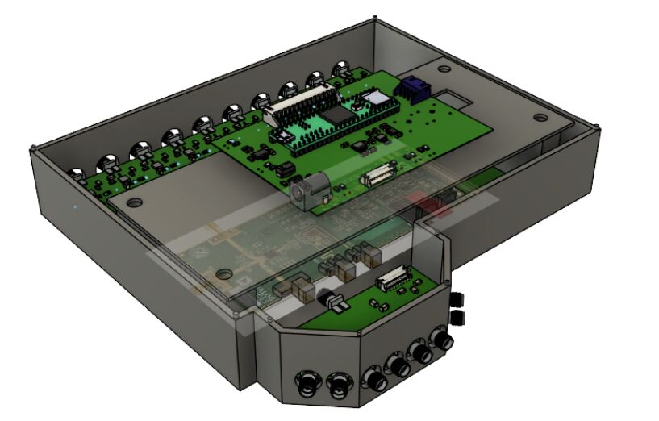
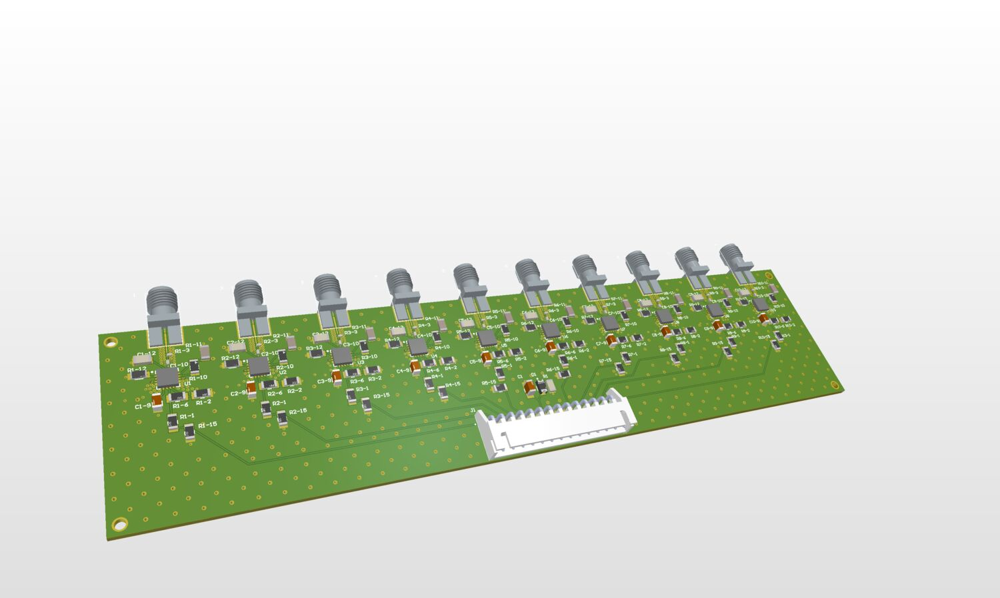

01 — RF SYSTEMS / CAPSTONE
Aegis
path-loss analyzer
Developed RF detection and power-distribution hardware for a 10-channel, Qualcomm-sponsored path-loss measurement system. Designed the detector PCB and implemented frequency-dependent calibration.
Inside the project
Hardware ownership
Designed the RF detector and power-distribution PCBs, including ten receive channels and controlled-impedance routing. Integrated the multi-channel measurement architecture and contributed to the RF switch board and mechanical integration.
Calibration
Applied six known power levels at multiple RF frequencies and compared detector readings against a reference power meter. A quadratic calibration function incorporating voltage, frequency, and cross terms converted detector voltage to RF input power.
The résumé reports approximately 0.1 dB calibration accuracy. Raw calibration data and the measurement uncertainty budget are not included here; this is not a full-band accuracy guarantee.
Engineering tradeoffs
A buck stage converted the 12 V supply to approximately 6 V for the synthesizer, followed by local regulation where needed. At 1 A, a direct 12-to-6 V linear drop would dissipate approximately 6 W, making the switching stage the more practical thermal choice.
Debugging
- Observation: Broadband detector readings were biased below approximately 1 GHz.
- Investigation: Examined the RF source’s spectral content.
- Root cause: Source harmonics contributed power beyond the intended fundamental.
- Resolution: Moved to a cleaner RF source.
